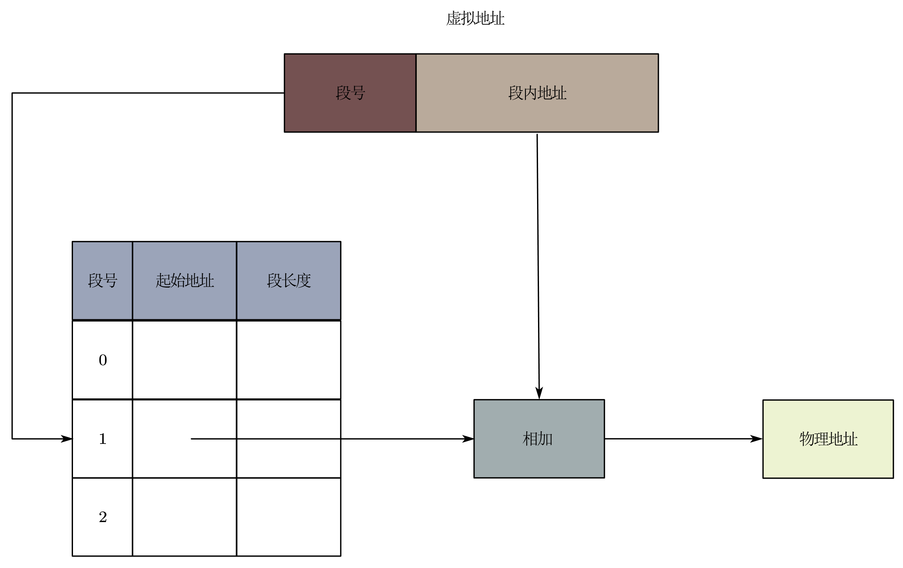
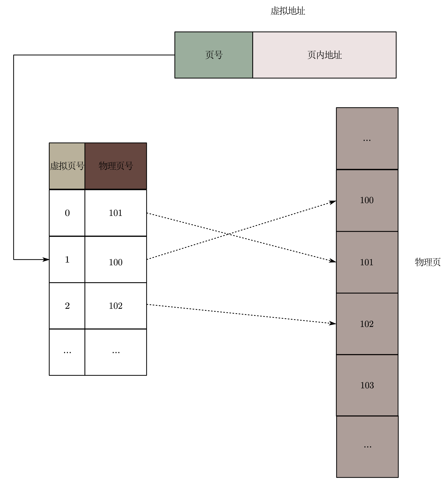
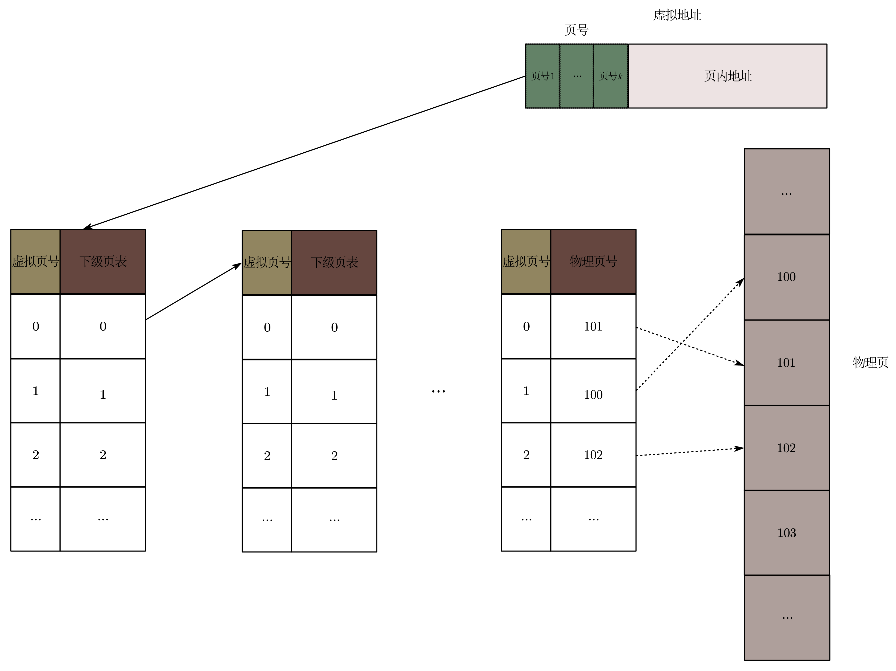
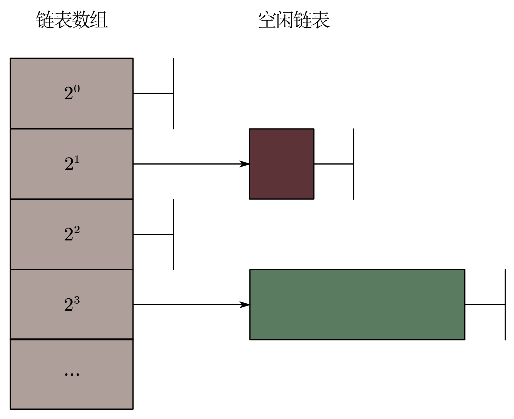

操作系统（一）：内存
虚拟内存
为了让每个应用都可以高效又安全地使用物理内存，现代操作系统中会在应用程序和物理内存之间加入一层新的抽象：虚拟内存。应用程序在编写时仅考虑虚拟内存，CPU 在运行时将应用程序的虚拟内存地址翻译成物理内存地址，操作系统负责设置虚拟地址与物理地址之间的映射。
虚拟内存的设计有以下三个目标：
- 高效性：虚拟内存不能在程序运行过程中造成明显的性能开销，且虚拟内存抽象也不应该占用过多的物理内存资源。
- 安全性：虚拟内存应使得不同应用程序之间的内存相互隔离。
- 透明性：应用程序开发者在变成时无需考虑虚拟内存抽象。
虚拟内存的翻译
在使用虚拟内存的情况下，CPU 取指令时发出的时指令的虚拟地址，该虚拟地址被内存管理单元（Memory Management Unit，MMU）翻译为对应的物理地址，包含改物理地址的内存读请求被发送到物理内存设备，然后物理内存设备把该物理地址对应的内容发送给 CPU。为了加速翻译，现代 CPU 都引入了转址旁路缓存（Translation Lookaside Buffer，TLB）。
MMU 将虚拟地址翻译为物理地址的主要机制有两种：分段机制与分页机制，下面分别介绍。
基于分段的虚拟地址
在分段机制中，操作系统以“段”的形式管理物理内存。CPU 访问虚拟内存空间中某一个段时，MMU 会通过查询段表得到该段对应的物理地址区域。
虚拟地址由两个部分构成：高位的段号和低位的段内偏移。在翻译时，MMU 首先通过段表基地址寄存器找到段表的位置，结合虚拟地址中的段号，找到对应物理段的信息；然后取出该段的起始地址（物理地址），加上待翻译虚拟地址中的段地址（偏移量），就能够得到最终的物理地址。
在分段机制下，不仅虚拟内存空间被划分成不同的段，物理内存也以段为单位进行分配。这种段式分配方式容易导致在物理内存中出现外部碎片，即在段与段之间留下碎片空间，从而造成物理内存资源利用率的降低。
基于分页的虚拟地址
虚拟地址翻译
在 x86-64 架构之后，基于分页机制的虚拟内存已经成为主流。分页机制的思想是将虚拟内存地址空间划分成连续的、等长的虚拟页（显著区别于分段机制下不同长度的段），同时物理内存也被划分为连续的、等长的物理页。虚拟页和物理页的页长固定且相等，操作系统可以很方便地为每个应用程序构造页表，即虚拟页到物理页的映射关系表。类似于分段机制下的虚拟地址，分页机制下的虚拟地址分为两个部分：高位的页号和低位的页内地址。
在翻译时，MMU 首先解析得到虚拟地址中的虚拟页号，然后通过页表基地址寄存器找到页表，查询该虚拟页号对应的物理页号，最后用该物理页号对应的物理页的起始地址加上虚拟地址中的页内偏移得到最终的物理地址。
在分页机制下，连续的虚拟页可以对应离散的物理页，因此可以实现物理内存资源的离散分配。并且，分页机制按照固定页大小分配物理内存，可以有效避免分段机制中的外部碎片。
多级页表
页表是分页机制中的关键部分，如果仅使用一张简单的页表来记录映射关系，那么对于 64 位的虚拟地址空间，假设一个页的大小为 4 KB，页表中每一项的大小为 8 字节，那么这个页表的大小就是 $2^{64}/4 KB * 8$ 字节，即 33554432 GB。显然，这是不可接受的。因此，人们又设计出了多级页表来节省页表所占用的空间。
在使用多级页表时，一个虚拟地址中仍然可以划分为页号和页内偏移量。但是页号被进一步划分成 k 个部分，每一个部分对应着其在每一级页表中所对应的项。在多级页表中，除了最后一级页表中的项是映射到物理页，其余的页表都映射到下一级页表上。注意，在 0 到 k - 1 级页表中，其条目可以为空，该空条目的子页表也就不存在。换句话说，多级页表允许在整个页表结构中出现空洞，而单级页表则不允许。在实际使用中，大多数虚拟地址空间都是未分配的，因此多级页表可以部分创建，进而节省内存空间。
TLB
多级页表可以压缩页表的大小，但是会增加虚拟地址翻译的延迟。所以人们在 MMU 中加入了转址旁路缓存（TLB）来加速翻译的过程。TLB 相当于一个哈希表，将虚拟页号映射到物理页号上。考虑虚拟地址 VA，其在应用 A 和应用 B 中所对应的物理页是不同的，因此操作系统在切换应用程序时需要刷新 TLB 。
虚拟内存的管理
换页与缺页异常
如果虚拟页没有被分配使用，那么页表中自然没有对应的物理页映射。反过来，被分配使用的虚拟页在页表中一定有相应的物理页映射吗？答案是否定的。
虚拟内存中存在换页机制。该机制的基本思想是：当物理内存容量不够的时候，操作系统把若干物理页写入磁盘中，然后回收物理页。当操作系统希望从应用程序 A 回收物理页 P （对应 A 的虚拟页 V）时，其会将物理页 P 的内容写入磁盘中一个位置，并且在应用程序 A 的页表中去除虚拟页 V 的映射，同时记录该物理页写入磁盘时的位置。这一过程叫做换出。此时，虚拟页 V 就处于已分配但未映射的状态。
当程序访问到已分配但未映射的虚拟页时，就会触发缺页异常，此时会运行操作系统预先定义的缺页异常处理函数。该函数会找到一个空闲的物理页，将磁盘中的数据重新加载到该物理页中，并且在页表中填写虚拟地址到该物理页的映射。这一过程被称为换入。
换页策略
常见的换页策略有：FIFO 策略、Second Chance 策略、LRU 策略、MRU 策略、时钟算法策略。
FIFO 策略
FIFO 策略优先选择最先换入的页进行换出。操作系统维护一个队列，每换入一个页就将其加入队尾，需要换出页时则从队列头选择页。这种算法在实际中表现不佳，也几乎不会被现代操作系统采用。
Second Chance 策略
Second Chance 策略是 FIFO 策略的改进版。其在每个记录的物理页上增加了一个访问标志位，在寻找需要换出的内存页时，该策略优先查看位于队头的内存页。如果该内存页的访问标志位没有被置上，则换出该页；否则，将其标志位清空，并将其挪到队尾，然后继续从队头寻找符合条件的内存页。
LRU 策略
LRU 策略会记录每个物理页被访问的时间，在寻找物理页进行换出时，优先选择那些最久未被访问的物理页。
MRU 策略
MRU 策略和 LRU 策略相反，在寻找物理页进行换出时，会优先选择那些最近被访问的物理页。
时钟算法策略
时钟算法将换入物理内存的页号排成一个时钟的形状。该时钟有一个针臂，指向新换入内存的页号的后一个。同时，也为每个页号维护一个访问标志位。每次需要选择换出页号时，该算法从针臂所指的页号开始检查。如果当前页号的访问位没有设置，则将该页换出；否则，将其访问标志位清空，并将针臂顺时针移动到下一个页号。时钟算法策略类似 Second Chance 策略，但实现上更高效些。
物理内存
物理内存的分配
物理内存的分配有两个评价指标：内存资源利用率、分配性能。内存资源利用率要求分配机制可以减少内部碎片和外部碎片的大小；分配性能要求分配机制尽可能降低分配延迟和节约 CPU 资源。
伙伴系统
伙伴系统是现代操作系统中广泛使用的机制。其基本思想是将物理内存划分成连续的块，以块为单位进行分配。不同块的大小可以不同，但每个块都有一个或多个连续的物理页组成，物理页的数量必须是 2 的 n 次幂（$0 \le n <$ 预设的最大值）。当一个请求需要分配 m 个物理页时，伙伴系统将寻找一个大小合适的块，该块包括 $2^n$ 个物理页，且满足 $2^{n-1} < m \le 2^{n}$。在处理分配请求的过程中，大的块可以分裂成两半，这两个块互为伙伴。分裂得到的块可以继续分裂，直到一个大小合适的块去服务相应的分配请求。在一个块被释放后，分配器会找到其伙伴块，若伙伴块也处于空闲的状态，则可以将这两个块进行合并，合并得到的块可以进一步向上合并。由于分裂操作和合并操作都是级联的，因此可以很好地解决外部碎片的问题。
在实际中，常用空闲列表去实现伙伴系统。具体来说，全局有一个有序数组，其每一项都指向一条空闲链表，每条链表将其对应大小的空闲块连接起来（一条链表中的空闲块大小相同）。当收到分配请求之后，伙伴分配器首先计算应该分配多大的空闲块，然后查找对应的空闲链表。例如，请求的大小是 15 KB，则应该分配一个 16 KB 的块。因此首先查找第二条 $2^2$ 空闲链表，如果链表不为空，则取出头节点的空闲块分配即可。但是在图中该链表为空，则继续访问第三条 $2^3$ 空闲链表，取出一个空闲块（32 KB），将其分裂成两个 16 KB 的空闲块，一块用于服务请求，另一个则插入 $2^2$ 这条空闲链表中。
参考资料
现代操作系统：原理与实现第 4 章